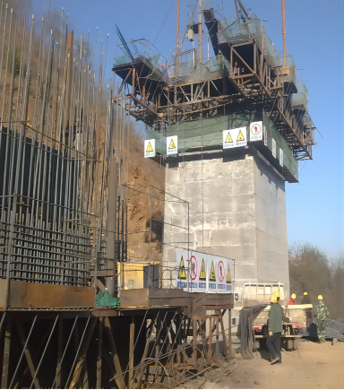
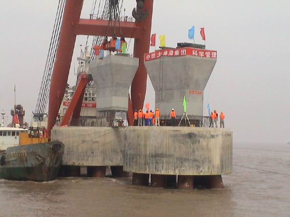
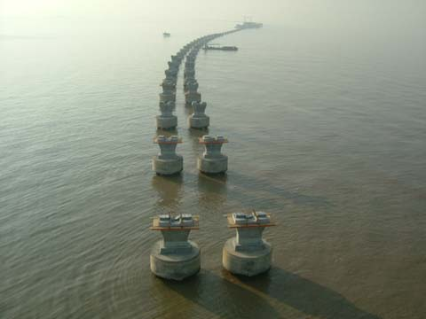

第四节 桥墩施工
第四节 桥墩施工
[A6-2.103]桥梁施工中桥墩受力分为：桥墩主体在施工过程中的受力、桥墩主体施工完成后的受力。
[A6-2.104]桥墩主体部分的施工方法通常分为两大类：现场就地浇筑（或砌筑）法和预制拼装法。
（1）施工工序
[A6-2.105]桥墩现场施工包括现场浇筑法和现场砌筑法，施工工序为：桥墩定位与放样→在基础襟边上立模板和支架→浇（砌）筑墩身→绑扎墩帽钢筋→浇注墩帽混凝土并预留支座锚栓孔。
[A6-2.106]该方法主要用于圬工桥墩和钢筋混凝土桥墩，并且有现场施工条件的桥址处，目前大部分工程采用这种施工方法。其优点是工序简便，机具较少，技术操作难度不大，易于实施；缺点是施工工期较长，耗费劳动力和物力较大。
（2）浇（砌）筑方法
[A6-2.107]①桥墩采用石块或混凝土块材料建造时，采用砌筑法施工。施工中应遵照现行桥梁施工规范要求进行，并严格控制施工误差。如图6-2-47所示为石砌墩身砌筑方法，台身砌筑方法类同。
a）墩身Ⅰ-Ⅰ剖面 b）墩身Ⅱ-Ⅱ剖面
h方向注明石料高度及灰缝厚度；b方向注明石料尺寸及灰缝宽度；c方向注明错缝尺寸
图6-2-47 石砌桥墩砌筑方法
[A6-2.108]②桥墩采用混凝土、片石混凝土、钢筋混凝土等材料建造时，采用浇筑法施工。施工中需要立模浇筑（图6-2-48），模板种类有木模、钢模等。木模和钢模一般用于高度不大的桥墩，在设计时，墩身高度尽量采用模板模数，多余部分单独制作木模补高差。滑模[图6-2-49a）]、爬模[图6-2-49b）]、翻模[图6-2-49c）]的施工方法一般用于高墩施工，其中主要以爬模和翻模施工方法应用较为广泛。
1-模板；2-柱箍；3-定位销；4-卡具；5-夹具臂；6-模板；7-横肋；8-连接销子；9-可调螺丝
图6-2-48 立模板浇筑示意
a）滑模施工
 b）爬模施工
b）爬模施工
 c）翻模施工
c）翻模施工
图6-2-49 高墩桥梁施工方法
（3）结构受力特点
①重力式桥墩
[A6-2.109]重力式桥墩采用圬工材料建造，由于截面尺寸相对较大，自重较大，一般在施工中能够满足施工荷载作用下的受力要求。
②轻型桥墩
[A6-2.110]轻型桥墩为一般为钢筋混凝土结构，墩身截面尺寸相对较小，结构轻柔，在桥墩施工中一般能够满足受力要求。
③空心薄壁墩
[A6-2.111]空心薄壁墩一般长细比较大，在施工中可能出现纵向位移较大、受压失稳等情况。
A.施工控制验算
a.施工荷载作用下受压稳定性验算。
b.风荷载作用下墩顶位移验算和抗风稳定性验算。
c.连续刚构桥施工0号块时，支架结构的支承在墩身上的局部承压计算。
d.悬臂施工的不均衡性对桥墩的受力影响。
B改善结构受力措施
a. 在施工薄壁高墩时，桥墩处于悬臂受力状态，风荷载将对桥墩的墩顶位移产生较大影响。施工中应对墩身采取增加临时横向联系等措施保障墩身不发生过大侧向位移，尤其是不发生失稳现象，确保桥墩安全，为桥跨结构施工打好基础。
b.连续刚构桥桥墩在施工过程中，可通过一些方法改善连续刚构桥的桥墩受力。通常改善桥墩受力的措施有：合龙前顶推主梁；边跨合龙前配重、中跨合龙时逐步卸载等。
（1）施工工序
[A6-2.112]预制拼装法施工桥墩又称为装配式桥墩。其施工分为两部分：拼装部分墩身施工和现场就地浇筑实体部分墩身施工。施工工序为：制梁厂（场）预制桥墩→将成品墩移运至桥位处→采用起吊设备架设→安装→现浇湿接缝。
[A6-2.113]该方法主要用于预应力混凝土、钢筋混凝土空心薄壁墩，或现场现浇施工有困难的地区（如深沟峡谷和海洋湖泊等特殊条件地区），其特点是在确保工程质量的前提下，克服了现场施工面临的困难，实现了工厂化预制，提高了施工质量，加速了工程进度，提高了工程效益。随着国内施工机具（如起重机械、运输机械、架设机械等）的进步与创新，采用预制装配构件建造桥墩的施工方法有了飞速发展。
（2）架设方法
[A6-2.114]装配式桥墩架设安装所采用的起吊设备应根据预制墩重量及桥址环境条件选用，常见的架设方法有：陆地架设法和浮吊架设法。图6-2-50所示为东海大桥预制装配墩的施工过程。
 a）预制场预制桥墩和箱梁
a）预制场预制桥墩和箱梁
 b）龙门吊将桥墩运至岸边
b）龙门吊将桥墩运至岸边
 c）桥墩装运至岸边浮吊船
c）桥墩装运至岸边浮吊船
d）桥墩运至墩位处并安装
e)预制桥墩安装就位
图6-2-50 东海大桥桥墩施工过程示例
（3）结构受力特点
[A6-2.115]装配式桥墩在吊运过程中，应设计合理吊点位置，保障桥墩在运送过程中的平稳性。在安装时，应做好墩身节段间的连接，确保墩身就位后连接牢固可靠。装配式桥墩节段间的连接方式主要有钢筋灌浆套筒连接、钢筋灌浆波纹钢管连接、构件承插式连接、钢筋插槽式连接、湿接缝式连接和预应力钢筋连接等6种连接方式，具体可参阅现行《公路装配式混凝土桥梁设计规范》（JTG/T 3650-05）的规定。
[A6-2.116]无论是采用现场就地浇筑（或砌筑）法还是预制拼装法，桥墩主体施工完成后，都要在墩顶现浇或预制架设桥跨结构。当采用架桥机架梁时（图6-2-51），桥墩将承受偏载作用，桥墩顶部产生纵向水平位移。因此，必须对桥墩进行施工偏载计算与验算，既要保障架梁安全，又要确保桥墩在施工过程中墩身截面承载力、偏心距（或截面抗裂）和墩顶纵向位移满足设计要求。图6-2-51所示为②号桥墩最不利受力状况。此时，第2跨梁架设完毕，第3跨的第一片梁（装配式主梁）或整跨梁（整体式主梁）运至第2跨梁上，架桥机一端支承在第2跨梁上，另一端支承在③号墩上，应验算在这种状态下②号桥墩的截面承载力、偏心距（或截面抗裂）和墩顶纵向位移。
a）
b）
图6-2-51 架桥机架梁示意
[拓展小知识6-4]桥墩施工验算
[A6-2.117]桥墩在施工过程中的受力可能出现大于成桥状态受力的情况。例如，图6-2-51所示架桥机架梁时，墩顶位移、墩身截面偏心距可能大于成桥状态下的验算结果；连续刚构桥双薄壁高墩施工时，若双壁之间不采取纵向临时联结措施（设计图中没有设计），在突遇较大风荷载时，墩身会产生纵向挠曲，墩顶位移较大而难以控制。因此，桥墩的施工验算尤为必要，并在施工中采取措施，保障施工安全，消除成桥运营后的安全隐患。
[学习提示]
[A6-2.118]桥墩主体的施工方法分为现浇法和预制拼装法，现浇法施工结构整体性好，但工期长；在不影响交通、无条件现浇施工条件下可采用预制拼装法施工。
[A6-2.119]高墩施工时应注意严格控制墩顶位移，必要时采取临时控制措施；采用架桥机架梁时，注意对桥墩受力及变形的影响；系杆拱桥施工时对墩顶位移的控制及临时固结措施等。根据不用桥型的具体施工情况，应对桥墩进行严格验算，包括墩顶位移、截面承载力、截面偏心距（或截面抗裂）计算、稳定性计算等。
[思考与练习]
- 以一座3跨20m连续梁桥，桥跨结构采用等截面连续箱梁、桥面宽度10m；下部结构采用独柱墩，墩身高度5.5m；支座为板式橡胶支座。分析在超载情况下，导致桥跨结构侧翻的受力机理。①若桥上行驶一辆超载车导致桥跨结构发生侧翻，该超载车超载重量？②若桥上行驶一列超载车队（每辆车重约1300kN）导致桥跨结构发生侧翻，该超载车队有几辆车？③为避免桥跨结构发生侧翻事故，应采取哪些补救措施？